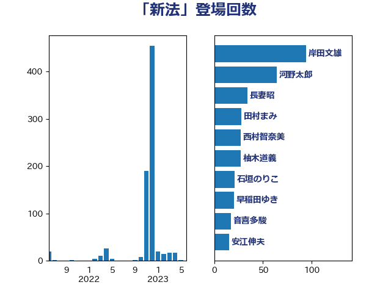

単語「新法」

| 岸田文雄 | 自由民主党 | 94 回 |
| 河野太郎 | 自由民主党 | 64 回 |
| 長妻昭 | 立憲民主党 | 34 回 |
| 田村まみ | 国民民主党 | 28 回 |
| 西村智奈美 | 立憲民主党 | 27 回 |
| 柚木道義 | 立憲民主党 | 27 回 |
| 石垣のりこ | 立憲民主党 | 21 回 |
| 早稲田ゆき | 立憲民主党 | 20 回 |
| 音喜多駿 | 日本維新の会 | 17 回 |
| 安江伸夫 | 公明党 | 15 回 |
| 田中健 | 国民民主党 | 14 回 |
| 吉田統彦 | 立憲民主党 | 14 回 |
| 石橋通宏 | 立憲民主党 | 12 回 |
| 國重徹 | 公明党 | 12 回 |
| 西岡秀子 | 国民民主党 | 11 回 |
| 串田誠一 | 日本維新の会 | 11 回 |
| 漆間譲司 | 日本維新の会 | 10 回 |
| 倉林明子 | 日本共産党 | 10 回 |
| 宮下一郎 | 自由民主党 | 8 回 |
| 堀場幸子 | 日本維新の会 | 8 回 |
| 簗和生 | 自由民主党 | 7 回 |
| 沢田良 | 日本維新の会 | 7 回 |
| 本村伸子 | 日本共産党 | 7 回 |
| 宮崎政久 | 自由民主党 | 7 回 |
| 柿沢未途 | 無所属 | 6 回 |
| 古屋範子 | 公明党 | 6 回 |
| 前川清成 | 日本維新の会 | 6 回 |
| 牧原秀樹 | 自由民主党 | 5 回 |
| 浅田均 | 日本維新の会 | 5 回 |
| 梅村聡 | 日本維新の会 | 5 回 |
| 打越さく良 | 立憲民主党 | 5 回 |
| 川田龍平 | 立憲民主党 | 5 回 |
| こやり隆史 | 自由民主党 | 5 回 |
| 青山繁晴 | 自由民主党 | 4 回 |
| 若宮健嗣 | 自由民主党 | 4 回 |
| 永岡桂子 | 自由民主党 | 4 回 |
| 朝日健太郎 | 自由民主党 | 4 回 |
| 山田太郎 | 自由民主党 | 4 回 |
| 小泉進次郎 | 自由民主党 | 4 回 |
| 大塚耕平 | 国民民主党 | 4 回 |
| 阿部弘樹 | 日本維新の会 | 3 回 |
| 鈴木義弘 | 国民民主党 | 3 回 |
| 福島みずほ | 社会民主党 | 3 回 |
| 田村貴昭 | 日本共産党 | 3 回 |
| 斎藤嘉隆 | 立憲民主党 | 3 回 |
| 後藤茂之 | 自由民主党 | 3 回 |
| 平山佐知子 | 無所属 | 3 回 |
| 山添拓 | 日本共産党 | 3 回 |
| 勝目康 | 自由民主党 | 3 回 |
| 佐々木さやか | 公明党 | 3 回 |
| 伊佐進一 | 公明党 | 3 回 |
| 高木かおり | 日本維新の会 | 2 回 |
| 谷公一 | 自由民主党 | 2 回 |
| 藤田文武 | 日本維新の会 | 2 回 |
| 茂木敏充 | 自由民主党 | 2 回 |
| 羽田次郎 | 立憲民主党 | 2 回 |
| 秋本真利 | 自由民主党 | 2 回 |
| 磯崎仁彦 | 自由民主党 | 2 回 |
| 源馬謙太郎 | 立憲民主党 | 2 回 |
| 池畑浩太朗 | 日本維新の会 | 2 回 |
| 松本剛明 | 自由民主党 | 2 回 |
| 岸真紀子 | 立憲民主党 | 2 回 |
| 山井和則 | 立憲民主党 | 2 回 |
| 宮本徹 | 日本共産党 | 2 回 |
| 宮崎雅夫 | 自由民主党 | 2 回 |
| 宮崎勝 | 公明党 | 2 回 |
| 吉田はるみ | 立憲民主党 | 2 回 |
| 齋藤健 | 自由民主党 | 1 回 |
| 高橋千鶴子 | 日本共産党 | 1 回 |
| 高市早苗 | 自由民主党 | 1 回 |
| 馬場雄基 | 立憲民主党 | 1 回 |
| 馬場伸幸 | 日本維新の会 | 1 回 |
| 青柳仁士 | 日本維新の会 | 1 回 |
| 青木愛 | 立憲民主党 | 1 回 |
| 野中厚 | 自由民主党 | 1 回 |
| 遠藤良太 | 日本維新の会 | 1 回 |
| 足立康史 | 日本維新の会 | 1 回 |
| 赤木正幸 | 日本維新の会 | 1 回 |
| 西村康稔 | 自由民主党 | 1 回 |
| 葉梨康弘 | 自由民主党 | 1 回 |
| 荒井優 | 立憲民主党 | 1 回 |
| 紙智子 | 日本共産党 | 1 回 |
| 篠原孝 | 立憲民主党 | 1 回 |
| 石川大我 | 立憲民主党 | 1 回 |
| 石井苗子 | 日本維新の会 | 1 回 |
| 田村智子 | 日本共産党 | 1 回 |
| 田嶋要 | 立憲民主党 | 1 回 |
| 玉木雄一郎 | 国民民主党 | 1 回 |
| 牧山ひろえ | 立憲民主党 | 1 回 |
| 泉健太 | 立憲民主党 | 1 回 |
| 武田良太 | 自由民主党 | 1 回 |
| 武井俊輔 | 自由民主党 | 1 回 |
| 森本真治 | 立憲民主党 | 1 回 |
| 森山浩行 | 立憲民主党 | 1 回 |
| 松沢成文 | 日本維新の会 | 1 回 |
| 新妻秀規 | 公明党 | 1 回 |
| 徳永久志 | 立憲民主党 | 1 回 |
| 徳永エリ | 立憲民主党 | 1 回 |
| 山際大志郎 | 自由民主党 | 1 回 |
| 山崎正恭 | 公明党 | 1 回 |
| 山口那津男 | 公明党 | 1 回 |
| 山下貴司 | 自由民主党 | 1 回 |
| 小倉將信 | 自由民主党 | 1 回 |
| 大石あきこ | れいわ新選組 | 1 回 |
| 大島九州男 | れいわ新選組 | 1 回 |
| 大岡敏孝 | 自由民主党 | 1 回 |
| 大口善徳 | 公明党 | 1 回 |
| 大串正樹 | 自由民主党 | 1 回 |
| 伊藤岳 | 日本共産党 | 1 回 |
| 井原巧 | 自由民主党 | 1 回 |
| 井上信治 | 自由民主党 | 1 回 |
| 中田宏 | 自由民主党 | 1 回 |
| 三ッ林裕巳 | 自由民主党 | 1 回 |
| おおつき紅葉 | 立憲民主党 | 1 回 |